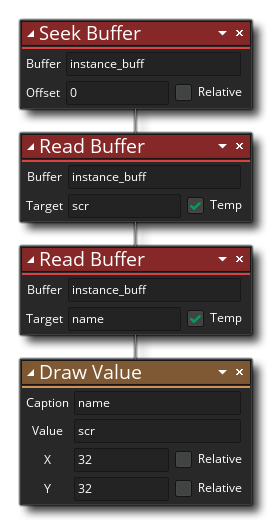

描述
此动作可用于从之前创建的缓冲区中读取数据。提供唯一的缓冲区ID值（由创建缓冲区动作返回） 并给定一个变量来存储返回的值。如果将变量标记为临时局部变量，则将为你创建该变量，并在事件或动脚本结束时再次将其丢弃。所有数据都以字符串的形式返回，因此，如果你存储了任何实数，你将不得不使用数据类型操作的一个将它从字符串转换为相应的值。请记住，读取和写入缓冲区是按照顺序进行的，因此，从缓冲区读取会将“搜索（seek）”位置移动到下一个条目，这意味着要读取各种数据，你只需将此动作调用所需的次数，并将每个返回的数据存储到变量中。
动作语法：

参数：
参数 描述 缓冲区 缓冲区索引（存储在变量中） 目标 用于保存返回数据的目标变量
例如：
上面的动作块代码将缓冲区读/写位置设置为缓冲区的起始位置，然后读取两个数据，将它们（字符串）存储在临时局部变量中。然后绘制这些变量的数据到屏幕上。